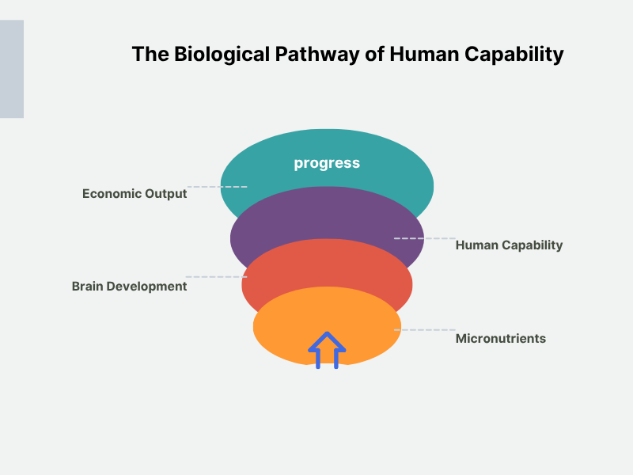

Submission for the Overdue Progress Essay Competition
The Hardware Failure
Why Teff Milling is the Core of Ethiopian Macroeconomics
The Unit of Progress: A Person
For most of human history, progress was fragile. Knowledge advanced slowly, often disappearing as quickly as it emerged. That changed. In a remarkably short span, humanity built systems that preserve and compound understanding across generations. Today, the accumulated knowledge of thousands of years is accessible almost instantly. Entire fields can be learned from a single device. Problems that once took lifetimes can now be approached in days.
Yet this expansion has not been universal. In places like my birthplace, Injibara — where some of the earliest traces of our species lie — many remain excluded from this accelerating system of knowledge. While progress continues to compound globally, large segments of the population are structurally prevented from participating in it, or contributing to it in meaningful ways.
But what is progress? It is often measured in material outputs: roads built, energy generated, economies expanded. These, however, are only surface indicators. Progress is more accurately understood as the expansion of human flourishing and agency: the extent to which individuals are able to think, act, and shape their own lives. Material gains matter only insofar as they enlarge these capacities. The primary unit of progress, therefore, is not a nation or an economy, but a person. And when progress stalls, the most direct place to look is not at isolated systems, but at the conditions shaping the individuals within them.
Those conditions are biological. Human capability is not an abstract potential waiting to be realized; it is built through physical processes that begin early in life. Every act of learning, problem-solving, or creation depends on a biological system formed under specific conditions. When these conditions are compromised, the resulting limitations persist, quietly setting a ceiling on what individuals — and by extension, societies — can achieve. Understanding progress, therefore, requires looking beyond institutions and outputs to the formation of human capacity itself, and to the point where its constraints first emerge. This essay examines where those constraints arise, how they shape outcomes at scale, and what it would take to address them.
A Nation at 38%
The scale of this constraint becomes clear when we examine measurable outcomes. Ethiopia's biological bottleneck is visible in the mathematics of human capital. The World Bank's Human Capital Index scores Ethiopia at 0.38. This means a child born here today will achieve, on average, only 38% of their potential lifetime productivity. We are attempting to build a 21st-century economy while operating at a 62% deficit before a single citizen enters the workforce.
The anatomy of this deficit is staggering, and its trajectory is worsening. An estimated 67% of Ethiopia's adult workforce suffered from childhood stunting. While official surveys recently celebrated a drop to a 37% national stunting rate, newer rural health data shows rates breaching 40% in vulnerable areas, marking a clear reversal of progress. Chronic malnutrition permanently throttles the neurological development and physical growth of nearly two in five children. Exacerbated by childhood anemia, this population-wide cognitive loss is rapidly accelerating. We lose an estimated 16.5% of our annual GDP to the long-term effects of child undernutrition. This is not progress delayed by a lack of infrastructure; it is progress capped and actively reversed by the preventable biological decline of our people.
The scale of this constraint is visible in the data below:

From Outcomes to Origins
To understand the origin of this failure, we must move beyond surface indicators and trace its underlying cause. Confronting a 62% drop in expected population output requires examining where these outcomes are shaped. Limitations observed in education or labor markets are not isolated failures, but reflections of constraints formed much earlier, during the development of cognitive and physical capacity. The scale of this constraint becomes visible in outcomes such as Ethiopia's national secondary school leaving examination, where in recent years only around 3% of students have achieved the minimum passing threshold. These are not merely failures of schooling; they are indicators of deeper developmental limits.
Following this chain to its origin leads to a decisive developmental window: the first 1,000 days of life. During this highly sensitive period, the irreversible foundations of the brain and body are established. If critical inputs are missing, later interventions can only improve marginal outcomes; they cannot restore what was never built. The first 1,000 days represent a primary bottleneck in human capability.
Biologically, the first 1,000 days are a high-stakes, time-bound manufacturing sprint. The brain grows to 80% of its adult volume, forming over a million neural connections per second. This makes the infant brain incredibly metabolically expensive, consuming upwards of 60% of basal energy. The assembly depends entirely on a continuous supply of specific microscopic raw materials. If iron is missing, the body cannot produce myelin for neural circuits, permanently dropping processing speed. If iodine is absent, the brain suffers structural deficits in the hippocampus, impairing learning and memory.
Starved of these inputs, a developing body does not pause to wait for better conditions. Evolution forces a brutal triage: the biological system sacrifices the complex, energy-heavy architecture required for abstract thought and problem-solving, redirecting scarce resources simply to stay alive. This mechanism is devastatingly permanent. Unlike a software glitch patched later through education, this is a hardware failure. Once the 1,000-day window closes, the brain's architecture is sealed, permanently capping the maximum cognitive load that individual can process.
From Biology to Economics
The claim that infant nutritional deficits are the primary vector for delayed national progress is bold — but entirely validated by data. We do not need to guess why macro-level systems fail; longitudinal evidence directly links early biological damage to broader economic losses. To understand Ethiopia's localized failure, we must examine the numbers.
First, the Young Lives study tracked Ethiopian children over fifteen years, revealing that physical stunting at age two caused a 48.8% drop in math scores by age eight — a hardware-level cognitive gap that schooling could not close. Second, clinical data across Sub-Saharan Africa shows that early stunting imposes a permanent 20% structural penalty on adult earning capacity. Third, applying this 20% penalty to the 67% of the Ethiopian workforce affected by stunting perfectly explains our 16.5% annual GDP loss. This is not an abstract market fluctuation; it is the calculated cost of millions of brains operating at a reduced biological baseline.
Biology is not the only variable in progress. Bad governance and poor infrastructure certainly compound the damage, but biological constraints set the absolute ceiling. We cannot overcome this bottleneck simply by building better schools or importing technology. It is mathematically impossible to optimize a macroscopic network if the individual human nodes are structurally compromised from the start.
Biology, Reduced to Chemistry
If the central constraint on progress is biological, we must examine how that biology is shaped. Human development relies on precise chemical inputs. The brain responds not to food as a cultural construct, but to specific molecular components. Brain growth, myelination, and neurotransmitter synthesis demand a consistent supply of iron, iodine, zinc, and essential fatty acids. Insufficient intake during critical developmental windows creates a structural gap between biological requirements and physiological reality.
The deficit in human capability is, therefore, a material issue arising from a mismatch between biological demands and available nutrients. This reframing shifts the focus from general scarcity to specific inputs and their delivery. At this level, biological requirements become identifiable, interventions can be precisely targeted, and meaningful solutions emerge.
This relationship can be understood as a simple system:

Yet this nutrient delivery system in Ethiopia operates in a hostile environment, buckling under systemic friction. At the household level, only 16% of children meet minimum dietary diversity standards. Severe food poverty and lowest-quintile wealth multiply the odds of stunting by 1.40 and 1.78 times, respectively. Short birth intervals and compromised sanitation compound this crisis, forcing the infant body to divert scarce developmental energy to fight infection. These conditions increase the risk of physical and cognitive impairment by factors of 1.37 and 2.04, respectively.
Catastrophic exogenous shocks further destabilize this fragile foundation. A 1°C increase in temperature during pregnancy raises the odds of severe stunting by 1.28 times due to agricultural failure. Armed conflict severs vulnerable supply lines, driving stunting rates in disrupted regions like Amhara to 45.7%. These concurrent forces continuously erode our human capital, demanding infrastructure specifically engineered to bypass them.
Recognizing this constraint, efforts have been made to address it at a national level. Ethiopia's 2015 Seqota Declaration demonstrates high-level intent to end child stunting, yet rates near 40% persist due to a critical disconnect. Macro-level policy fails to impact human development at the biological level, dissipating before it reaches the food system's foundation: the local hammer mill. Because the vast majority of the population relies on decentralized, informal hammer mills, their daily food supply entirely bypasses centralized fortification efforts. Unable to reliably deliver precise nutrients into local flour, national policy remains ineffective against the biology of stunting. The required intervention is therefore not administrative, but a technological retrofit that integrates essential nutrients directly into our decentralized supply chain.
Engineering the Hammer Mill
Diagnosing this failure requires examining Ethiopia's decentralized food system. Developed economies solve nutrient delivery through centralized industrial fortification. Ethiopia operates on a highly fragmented network, with most rural households relying on thousands of small, independent hammer mills. Centralized fortification excludes these local nodes, leaving at-risk populations unreached. The engineering bottleneck is not a global lack of vitamins, but the challenge of reliably injecting precise nutrients into a highly dispersed milling network.
A decentralized network requires decentralized technology — such as the dosifier developed by Sanku. Instead of centralizing milling, Sanku retrofits the existing system by installing automated, IoT-enabled dosifiers directly onto local hammer mills. These devices release a precise ratio of nutrient premix — iron, zinc, folic acid, and B12 — into the flour. This highly scalable approach operates at an exceptionally low cost (roughly $0.25 per person annually) and requires zero behavioral change from consumers. The biological substrate is thus automatically optimized at the processing node, delivering mass nutrition without relying on educational campaigns.
Deploying this technology in Ethiopia requires rigorous adaptation for teff. As the world's smallest cereal, teff generates a high-temperature, ultra-fine particle stream when hammer-milled into injera-grade flour, often exceeding 80°C at the outlet. The Sanku dosifier — designed for maize meal with larger particle sizes above 300 µm and lower milling temperatures — cannot simply be bolted onto a teff mill.
First, the nutrient premix — iron (as ferrous fumarate), zinc oxide, folic acid, and cyanocobalamin — must be micro-encapsulated with a heat-stable lipid coating rated to withstand at least 90°C without denaturing the B-vitamin payload. Second, teff's powder-like consistency requires injecting the premix through a venturi nozzle directly into the mill's turbulent discharge chute to ensure homogeneous blending; a standard gravity drip would cause stratification. Third, the dosing rate demands precise recalibration. Because an average Ethiopian consumes 300–400 grams of teff flour daily through injera, the fortificant must deliver 10 to 15 mg of iron per person per day — aligning with WHO guidelines for high-phytate cereal diets — while capping folic acid at 150 µg per 100 g of flour to prevent masking a B12 deficiency. This translates to a target injection rate of roughly 2.5 grams of premix per 100 kg of flour, continuously monitored by a load cell and mass-flow sensor inside the dosifier. Any deviation beyond ±5% triggers an automatic shutoff and an IoT alert.
The dosifier unit must run on a 12V DC supply, drawing under 15 watts, enabling reliable operation from a mill's existing diesel generator or a small solar-battery kit. These adaptations transform the neighborhood hammer mill from a passive grain processor into a controlled biological manufacturing point, capable of delivering a precision-engineered nutrient profile with every kurt of injera.
To ground this proposal in practical reality, I attempted to engage directly with practitioners working on decentralized fortification systems, including outreach to the Sanku team, while also reviewing available technical documentation on dosifier design and nutrient delivery constraints. This investigation revealed that adapting such systems to Ethiopia's context — particularly to teff milling — requires significant engineering modifications, from heat-stable micronutrient encapsulation to precise dosing within high-temperature, ultra-fine flour streams. These constraints do not invalidate the approach; they define the exact technical problem that must be solved.
Scaling this technology demands a ruthlessly pragmatic economic model. Rural hammer mills operate on razor-thin margins. The estimated cost of $0.25 per person annually cannot be passed on to households already facing severe food poverty. Instead, the system must align miller incentives with public health outcomes. By subsidizing the nutrient premix through the existing Seqota Declaration framework and providing IoT-monitored dosifiers at no upfront cost to operators, the friction of adoption drops to zero. Millers gain a competitive advantage by offering fortified teff without bearing financial risk, while the state secures an automated biological safety net without having to rebuild decentralized milling infrastructure.
From Conflict to Capability
Securing these rural mills guarantees an immediate biological outcome: uninterrupted micronutrient delivery that permanently unlocks a generation's cognitive architecture. Yet the true magnitude lies in its subsequent structural shock. Injecting millions of biologically optimized youth into Ethiopia's economy will not merely fill the labor market; it will force its evolution. An elevated cognitive baseline accelerates productive urbanization, driving an aggressive shift from subsistence agriculture to high-leverage industrial and technological sectors. This human capital surplus is the absolute prerequisite for advanced industrialization, yielding a workforce capable of rapid upskilling, complex problem-solving, and building scalable enterprises.
Concurrently, reclaiming the 16.5% of GDP lost to undernutrition frees the domestic capital required to support this demographic shift. Execution, however, presents a strict engineering challenge. Sustaining this system requires mitigating localized friction: ensuring unbroken premix supply chains, maintaining hardware and remote connectivity, and enforcing an economic model that protects local mill operators from financial burden. By rigorously managing these constraints, our daily injera ceases to be mere sustenance and becomes the biological vehicle for overdue progress.
National progress depends on the capabilities of the individuals driving it. In Ethiopia, this capability is a precise biological reality forged in early life. Systemic nutritional deprivation imposes cognitive and physical limitations that form an enduring barrier to collective advancement. Removing this bottleneck requires treating early-life nutrition as the primary infrastructure of human capital, rather than an intermittent humanitarian concern. Macro-level investments yield optimal returns only when utilized by a population operating at full cognitive potential. Securing this baseline through localized nutrient delivery amplifies the effectiveness of all subsequent investments. Resolving these early biological constraints is a prerequisite for sustainable economic growth. To achieve long-overdue progress, our human foundation must be built with the exact same rigor as the systems it will ultimately sustain.